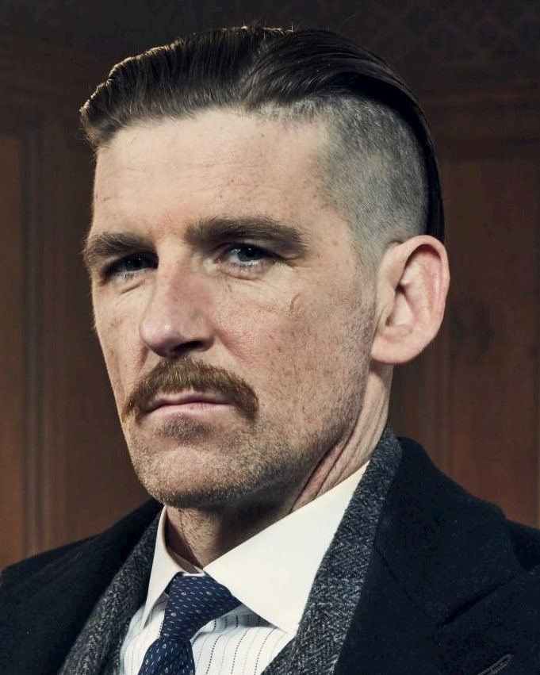

Arthur Shelby
Deputy Vice President, Shelby Brothers Enterprise. Thomas Shelby's right hand in the "Peak"
Résumé
— «My head is like a barge loaded with coal and iron. And when it tilts, the load slides to one side, then to the other, and ultimately - the barge overturns. Here is my head, like this damn barge - swinging, swinging and turning over, and I can not do anything.»
Experience
Recent
-
29th October 1929
Assumed position as Chairman of the Board
-
- Arthur has assumed position as Chairman of the Board following Tommy's leave of absence and convenes a meeting when he hears of the Crash. Arthur tries to preside over the meeting but — much to Linda's dismay — Polly suggests that they should wait for Tommy's return before making any decisions. Arthur is happy to know that the company is not lost as they have diversified their portfolio and have investments all over the world.
- As the year goes on, Arthur and Linda begin experiencing relationship trouble, mostly as Linda does not believe Arthur is leading the company the right way and fears is losing control of the finances. Despite this, Arthur warns Linda to be a good wife and let him deal with everything else, essentially silencing her. This leads to Linda looking for a way to divorce Arthur, however she is shocked to find that nobody in Birmingham will divorce a Shelby and seeks out Lizzie for advice. Lizzie admits that she will have to go to London to divorce a Shelby.
- Things between the two become more strained when Mosley reveals that he has heard news that Linda has been spotted with another man while married to him. This angers Arthur, who hunts down the man and slashes his face, seemingly leaving him for dead. He is later confronted by Linda, who is angry as all she did was talk to the man. Linda pulls a gun on Arthur, but is shot by Polly Gray before she has a chance to pull the trigger. After the bullet is removed, Arthur pleads with Linda to leave the Peaky life behind and run away with him, however she declines, admitting that she is thankful she didn't kill him as death would be too good for him.
- Forgetting about Linda, Arthur is privy to the plan to assassinate Oswald Mosley, playing a key role of arming Alfie Solomons' men. He also takes charge of ensuring Barney is in position with a clear line of fire at Mosley, reiterating that the plan is to shoot Mosley after Tommy gives the go ahead. When the plan fails, however, Arthur takes Tommy home, expressing his concern that Tommy is slowly losing his mind.
Back then
January 1919 – 1929
Deputy Vice President of Shelby Company Limited at Peaky Blinders
(here's my introduction letter)
-
Deputy Vice President of Shelby Company Limited at Peaky Blinders
-
Episode 1.1 Episode 1.2 Episode 1.3 Episode 1.4 Episode 1.5 Episode 1.6 Episode 2.1 Episode 2.2 Episode 2.3 Episode 2.4 Episode 2.5 Episode 2.6 Episode 3.1 Episode 3.2 Episode 3.3 Episode 3.4 Episode 3.5 Episode 3.6 Episode 4.1 Episode 4.2 Episode 4.3 Episode 4.4 Episode 4.5 Episode 4.6 Episode 5.1 Episode 5.2 Episode 5.3 Episode 5.4 Episode 5.5 Episode 5.6
- After returning from France, Arthur feels that he should be the head of the family business. However, he can't command the necessary authority and Thomas slowly starts to assume leadership.
- Arthur and his father initially shared a close, but similarly complex, relationship. Arthur was one of the only members of the Shelby family — and the Peaky Blinders as a whole — to welcome his father back to Birmingham, having left them as children in the care of their aunt.
-